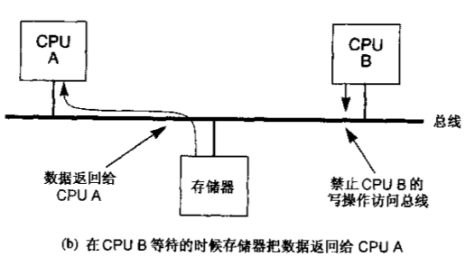

UNIX Systems for Modern Architectures: Symmetric Multiprocessing and Caching for Kernel Programmers
Table of Contents
1 unix-systems-for-modern-architectures
1.1 多处理机系统概述
cpu总线式结构允许高速缓存进行监听(snooping)

也允许在smp环境下单个cpu对存储器和读写操作满足原子性

1.2 采用信号量的内核
使用自选锁来实现信号量
typedef struct sema
{
lock_t lock;
int count;
queue q;
} sema_t;
void init_sema(sema_t* sema, int init_cnt)
{
init_lock(&sema->lock);
init_queue(&sema->q);
sema->count=init_cnt;
}
void p(sema_t* sema)
{
lock(&sema->lock);
sema->count--;
if (sema->count < 0) {
q.push(current_process_context());
unlock(&sema->lock);
swtch(); // switch to another process.
return;
}
unlock(&sema->lock);
}
void v(sema_t* sema)
{
lock(&sema->lock);
sema->count++;
if (sema->count <= 0) {
pcs_ctx* ctx = q.pop();
unlock(&sema->lock);
enqueue(&running_queue, ctx);
return ;
}
unlock(&sema->lock);
}
1.3 其他存储模型
todo(dirlt)